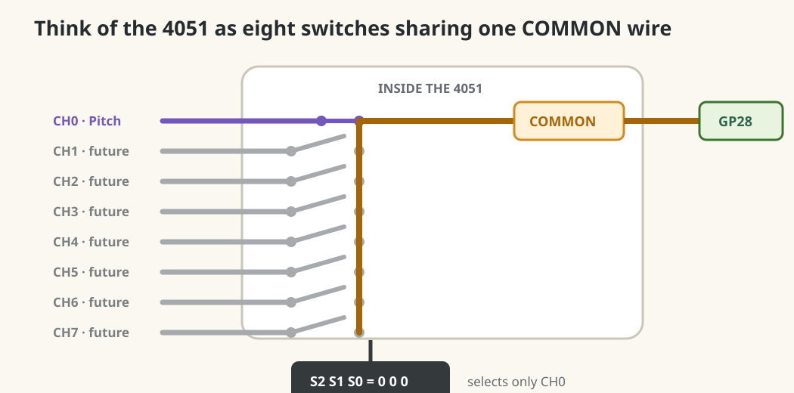
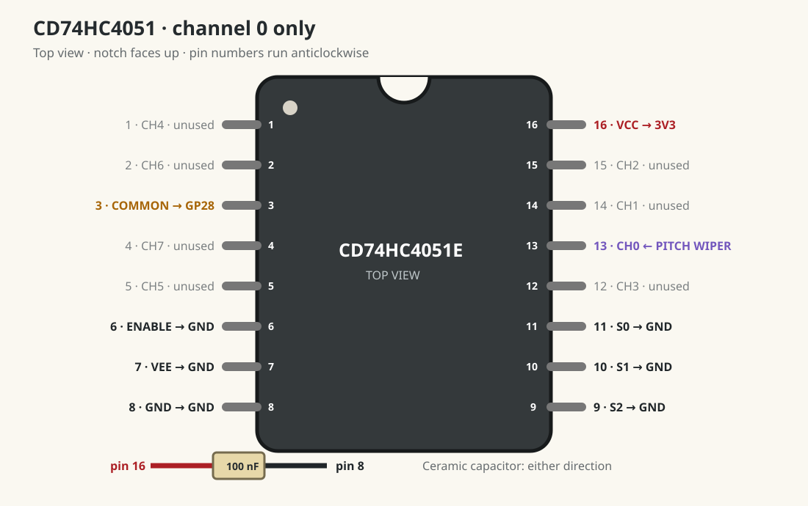
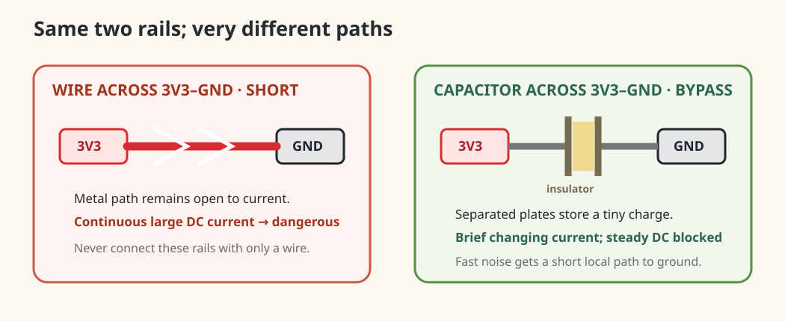

Dub Siren V3 · lesson 0009
Pass Pitch through a switchboard
Wire the purchased CD74HC4051E as one fixed analogue channel. Pitch still reaches GP28, but now travels through the multiplexer.
1. What a multiplexer does
The Pico has one measuring pin available here—GP28—but eventually several potentiometers to measure. The 4051 contains eight electronic switches. It closes one switch at a time, connecting one channel to the shared COMMON wire.
Imagine an eight-position rotary selector turned electronically. The Pico will later say “connect channel 0,” measure it, say “connect channel 1,” measure that, and repeat so quickly that every knob appears continuously available.

Three select pins make eight choices
Each select pin is one binary digit: ground means 0; 3.3 V means 1. Three digits produce eight combinations:
| S2 | S1 | S0 | Connected channel | Physical pin |
|---|---|---|---|---|
| 0 | 0 | 0 | CH0 · Pitch today | 13 |
| 0 | 0 | 1 | CH1 | 14 |
| 0 | 1 | 0 | CH2 | 15 |
| 0 | 1 | 1 | CH3 | 12 |
| 1 | 0 | 0 | CH4 | 1 |
| 1 | 0 | 1 | CH5 | 5 |
| 1 | 1 | 0 | CH6 | 2 |
| 1 | 1 | 1 | CH7 | 4 |
All selectors are grounded today, creating 000. Therefore only CH0 connects to COMMON. Later, S0–S2 connect to Pico digital outputs so software can change this number.
2. Understand today’s one-channel path
A multiplexer is a selectable switchboard. Today all three selector pins are held at zero, permanently selecting channel 0. No new Python selection code yet.
3. Orient the IC with USB unplugged
- Find the semicircular notch at one short end of the CD74HC4051E.
- Place the IC across the breadboard’s centre trench, notch facing away from you.
- With the notch at the top, pin 1 is top-left. Numbers run down the left to 8, then up the right from 9 to 16.
- Leave the DIP-16 socket aside; it is for a later soldered build.

4. Why every support wire is needed
Make each connection separately. Do not rely on matching wire colours.
- Pin 16 · VCC → 3V3(OUT)
- Powers the chip and defines its upper voltage rail. Our pots also produce at most 3.3 V, so signal and chip use the same safe ceiling.
- Pin 8 · GND → GND
- Digital zero reference for the chip’s selector logic. Without a common ground,
0and1have no reliable meaning relative to the Pico. - Pin 7 · VEE → GND
- Defines the lowest analogue voltage the switches may pass. The 4051 can support negative signals with a negative VEE supply, but every pot in this project stays between 0 and 3.3 V, so VEE is zero volts.
- Pin 6 · ENABLE → GND
- ENABLE has a bar in the datasheet: it is active-low. Ground enables the selected switch. Driving it high would open all eight switches and disconnect COMMON.
- Pins 11, 10, 9 · S0, S1, S2 → GND
- These are the three binary selector bits. Grounding all three creates
000, selecting CH0. They must never float; an uncertain selector could jump between pots. - 100 nF ceramic capacitor · pin 16 to pin 8
- A tiny local energy reservoir. It supplies brief current spikes when internal switches change and carries high-frequency supply noise to ground. Place it close to the IC. It is non-polar.
Why pin 16 to pin 8 is not a short circuit
A wire is conducting metal from end to end, so a wire between 3V3 and GND would allow continuous current: a short circuit. A capacitor contains two metal plates separated by an electrical insulator. No steady DC path crosses that insulator.

For this 100 nF capacitor at 3.3 V, the stored charge is only Q = C × V = 330 nC, and stored energy is about 0.54 µJ. It is enough to support the IC during tiny fast disturbances, not enough to behave like a large power source.
Why this exact capacitor is suitable
K104K10X7RF5UL2- The exact Vishay part you bought. TME specifies 100 nF, 50 V, X7R, ±10%, through-hole, 2.5 mm pitch.
- 100 nF = 0.1 µF = 100,000 pF
- These are three ways to write the same capacitance. TI explicitly recommends a 0.1 µF bypass capacitor for a single-supply CD74HC4051. The value is a proven balance: enough charge for logic-switching spikes while remaining effective at high frequencies.
- Why not another nF value?
- 10 nF stores one tenth as much charge and targets shorter, higher-frequency disturbances. 1 µF stores ten times as much but is generally less effective by itself at the fastest edges. Values are not magic or interchangeable: their impedance changes with frequency. TI says extra values may be placed in parallel, but 100 nF is the correct first capacitor here.
- Why ceramic?
- Ceramic capacitors respond quickly, have low internal resistance, are compact, and are non-polar. That makes them standard local bypass parts for digital ICs. Through-hole leads add some inductance, so keep both leads short and place the body close to pins 16 and 8.
- What 50 V means
- It is the maximum rated working voltage, not a voltage the capacitor creates. Using it at 3.3 V gives a large safety margin.
- What X7R and ±10% mean
- X7R describes a ceramic dielectric whose capacitance remains reasonably stable over a wide temperature range. ±10% means a new 100 nF part may measure roughly 90–110 nF; that is completely acceptable for bypassing.
5. Why the two signal wires go there
- Remove the Pitch centre-wiper wire from GP28. Keep both outside pot wires on 3V3 and GND; they still create the 0–3.3 V signal.
- Connect the Pitch centre wiper to pin 13, CH0. This makes Pitch the first selectable source.
- Connect pin 3, COMMON, to GP28 / ADC2. COMMON is the one shared wire carrying whichever channel is selected to the Pico’s measuring input.
- Leave Rate, Amount, Trigger, and LED wiring unchanged.
The analogue switches are bidirectional, so the chip does not technically have a fixed input and output. We choose channels as inputs and COMMON as output because many knobs are sharing one Pico ADC.
6. Predict before power
“Pitch wiper, pin 13 channel 0, internal switch, pin 3 common, GP28.” Why must pins 9–11 all be grounded?
7. Test only Pitch first
Reconnect USB. Run this small test:
from picozero import Pot
from time import sleep
pitch = Pot(28)
smoothed_pitch = pitch.value
last_pitch_hz = -1
while True:
smoothed_pitch += (pitch.value - smoothed_pitch) * 0.1
pitch_hz = int(100 + smoothed_pitch * 900)
if abs(pitch_hz - last_pitch_hz) >= 5:
print("Pitch through 4051:", pitch_hz, "Hz")
last_pitch_hz = pitch_hz
sleep(0.01)- Turn Pitch fully left: expect roughly 100 Hz.
- Turn fully right: expect roughly 1000 Hz.
- Leave untouched: smoothing should keep it stable.
Pitch stays near one value
Unplug USB. Confirm Pitch wiper goes to pin 13, COMMON pin 3 goes to GP28, and pins 9–11 all reach GND. Recount from the notch rather than from the breadboard row numbers.
Pitch reads zero or behaves randomly
Unplug immediately. Recheck pins 16, 8, 7, and 6. Also check the IC is across the centre trench so opposite pins are not joined by one breadboard strip.
Done means
- The IC notch and all sixteen pin numbers make sense.
- Pitch travels through pin 13 to pin 3 and GP28.
- Pitch still reaches roughly 100–1000 Hz clockwise.
- You can explain why selector state 000 chooses channel 0.
Tell your teaching agent: your lowest and highest reading through the 4051, and whether it remains stable untouched.